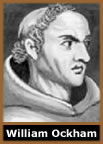
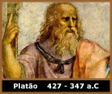
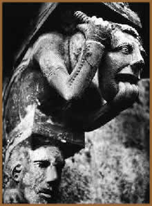
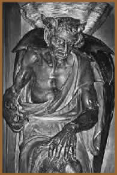
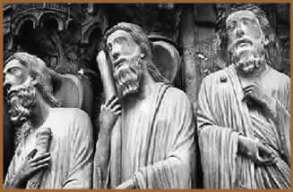

É bem sabido que todo estilo artístico
tem profunda relação com a filosofia de seu tempo.
Pode-se definir um estilo como a expressão de uma filosofia
por meio de símbolos. Sendo assim, as fases do estilo Gótico
exprimem por meio de seus símbolos a filosofia aceita em
seu tempo. Então, a escultura
Gótica Primitiva deve exprimir os conceitos da filosofia
platônica e neo-platônica em vigor, em seu tempo.
A escultura do Gótico Radiante exprime as idéias
do aristotélico-tomismo, enquanto a escultura Gótica
Flamejante retrata a filosofia nominalista de Ockham.
Tomemos um ponto característico desses diversos
sistemas filosóficos – a questão dos univer-
sais – e vejamos como ela se refletiu na escultura desses
períodos. A questão dos universais atormentou os
filósofos desde a Grécia antiga.
Chamam-se
universais os termos que designam todos os seres de determinada
espécie. Assim, o termo boi designa todos os bois que possam
existir, qualquer que seja sua raça e características.
A questão é: o universal existe? Como existe? Onde?
Para resolvê-la, três soluções principais
foram aventadas: a do platonismo, a do aristotélico-tomismo
e a do nominalismo de Guilherme de Ockham.
A solução platônica afirmava
que o universal existe realmente no mundo das idéias. Existiriam,
em um mundo ideal, desprovidas totalmente de matéria, as
puras idéias. Lá existiriam o boi ideal, a rosa
ideal, o homem ideal, etc. Esse mundo das idéias, segundo
Platão, seria um mundo puramente espiritual, perfeito e
divino. É a solução denominada realista,
porque considera o universal realmente existente. Essa posição
conduz rapidamente à gnose, porque é negadora da
bondade da matéria.
Oposta a ela, per diametrum, é
a solução proposta por Ockham. Segundo esse filósofo
franciscano e fraticello, o universal seria apenas um nome, sem
nenhuma existência, de qualquer forma que seja. Daí
sua filosofia chamar-se nominalismo. Para Ockham só existiria
o indivíduo, e o conhecimento como a ciência seriam
apenas dos seres singulares. Em conseqüência, o conhecimento
só poderia ser experimental e nunca teórico. Sendo
a matéria a causa da individuação, o nominalismo
de Ockham devia necessariamente conduzir a humanidade para o experimentalismo,
para o existencialismo e para o materialismo modernos, isto é,
para várias formas de panteísmo. Pois nele se dá
uma divinização da matéria, com desprezo
ou negação do espírito, da forma substancial
e da essência.
Para resolver a questão dos universais,
o aristotélico-tomismo deu uma solução que
se situa a meio caminho entre o realismo do platonismo e o nominalismo
de Ockham. Segundo São Tomás, o universal existe
na mente humana, enquanto idéia, e nos seres concretos,
enquanto forma substancial. E seria isso exatamente o que nos
permite reconhecer os seres como indivíduos de uma espécie.
Na solução tomista não se despreza nem o
espírito, nem a matéria; nem a forma, nem a matéria;
nem a alma, nem o corpo. Essas três soluções
do problema dos universais foram sucessivamente adotadas no decorrer
da Idade Média, causando conseqüências nas características
da escultura de cada período.
A escultura Gótica
Primitiva e o Realismo platônico
O estilo gótico foi criado no século
XII. A primeira obra de arquitetura
gótica foi a realizada por Suger ao reformar a fachada
e o coro da Abadia de Saint-Denis. Entretanto, as primeiras esculturas
em estilo gótico vão ser encontradas na Catedral
de Chartres.
Na época em que se esculpiram as grandes
estátuas de Chartres, os mestres das universidades medievais
adotavam a filosofia platônica, e portanto admitiam a solução
realista no problema dos universais. Daí os escultores
darem inteira primazia aos valores universais, desprezando tudo
o que era próprio do indivíduo. Por isso, não
se esculpiam retratos nesse tempo. Fazia-se a imagem do Rei, do
Bispo, do Cavaleiro, etc. Esculpiam-se modelos ideais, jamais
pessoas concretas. O realismo platônico desprezava a matéria;
por isso os escultores do gótico primitivo davam pouquíssima
importância aos corpos de suas estátuas. O que valia
era a alma, expressa particularmente no rosto.
O
mundo ideal de Platão, sendo inteiramente espiritual, não
admitia nem sentimentos, nem emoções. Por isso,
a estatuária dessa época era absolutamente fria,
não revelando emoção nenhuma. São
rostos que não riem nem choram. Fisionomias absolutamente
impassíveis. Nelas há uma tal ausência de
sentimentos e movimentos que elas puderam ser feitas como estátuas-colunas,
como se vêem tantas nos portais de Chartres. Também
não se dava importância a que os corpos das estátuas
fossem desproporcionados às cabeças. Muitas das
estátuas da Catedral de Chartres apresentam uma relação
anormal entre corpo e cabeça. Sabe-se que essa proporção,
normalmente, deve ser de 1 para 7 ou 8; no máximo de 1
para 9. Nas estátuas de Chartres se vai bem além
dessas proporções.
Eram comuns as estátuas-colunas, pois a
ausência de movimento dava à figura uma verticalidade
que fazia dela quase um prolongamento do pedestal, tornando-se
ela mesma como que uma coluna. Essas figuras apresentam os cabelos
e os fios das barbas escorridos, quase sem ondulação,
para acentuar a falta de movimento e a estabilidade. Também
as vestes não apresentam dobras profundas e apenas caem
ao longo do corpo da estátua. São dobras rasas,
quase que paralelas, e quase estilizadas.
O gótico
radiante e o aristotélico-tomismo
No período radiante, durante o século
XIII, atinge-se o apogeu do estilo gótico. A escultura
desse período é talvez a mais perfeita que se tenha
alcançado na História. É o tempo do apogeu
da escolástica, quando São Tomás de Aquino
arquitetou a Suma Teológica harmonizando a filosofia
aristotélica e o cristianismo. Para Aristóteles,
os seres que vemos ao redor de nós possuem duas causas
intrínsecas: a causa material e a causa formal.
A causa material é aquilo de que as coisas
são feitas, enquanto a causa formal é aquilo que
faz da coisa o que ela é. Por isso, matéria e forma
substancial deveriam se refletir na escultura. Ao contrário
pois do platonismo, a filosofia aristotélica aceitava a
matéria. Para o cristianismo isso é absolutamente
certo, pois foi Deus quem criou todas as coisas, e o Criador,
ademais de afirmar que cada coisa criada era boa, ao contemplar
a sua obra criativa, contemplando tudo o que fizera, disse que
era "valde bona", isto é, muito boa.
A
recusa em aceitar a matéria como boa era típica
tese gnóstica, que a Igreja condenara. O próprio
Filho de Deus se encarnou e instituiu sacramentos sempre
utilizando matéria, demonstrando assim que a matéria
é boa.
Ao triunfo da filosofia aristotélico-tomista
corresponderia a realização de esculturas em que
não se buscava representar apenas a idéia de algo,
mas o ser real concreto, com matéria e forma. Esse foi
o tempo do gótico radiante, do qual são obras típicas
as catedrais de Reims, boa parte de Notre Dame de Paris e de Estrasburgo.
As esculturas desse período atingem grande
perfeição e grande equilíbrio. Elas não
visam a representar o universal. Elas buscam figurar também
o indivíduo, sem esquecer o universal. Por isso, elas não
são mais figuras ideais do rei, do cavaleiro, do bispo,
mas retratam o Rei São Luís, o Bispo Maurice de
Sully, o cavaleiro tal, o Abade Suger. Elas não são
puros retratos e nem puras idealizações simbólicas
de um conceito universal, mas preocupam-se em esculpir um indivíduo
concreto sem menosprezar o que ele era.
Realizando a figuração real de corpos,
a estatuária radiante não recusava representar as
emoções e o movimento. As figuras fazem gestos,
se voltam, não são mais estáticas. As suas
vestes se movimentam também, dando ocasião de representá-las
com dobras profundas e majestosas, ou então leves e delicadas.
As estátuas desse período revelam emoções,
mas sempre emoções equilibradas, sem excessos. Elas
jamais gargalham. Sorriem. Exemplo típico disso são
os magníficos anjos do sorriso que se podem contemplar
na Anunciação de Reims ou na apresentação
de Jesus no Templo.
Pela primeira vez na História da arte se
teve a idéia de representar uma figura sorridente. Os anjos
do sorriso de Reims superam tudo o que se havia feito até
então em matéria de escultura. Outras obras primas
dessa época são a Virgem dourada de Amiens, a serva
da apresentação no Templo de Reims e a inigualável
escultura do Beau Dieu de Amiens, ainda com alguns traços
do gótico primitivo em seu rosto.
Tanto se fala - e com razão, se se atenta
apenas para a beleza material – da perfeição
das esculturas helênicas. Nelas, porém, jamais se
vê um rosto sorridente. Normalmente as esculturas clássicas
gregas são de rosto quase inexpressivo. Apenas nas figurinhas
de Tanagra se pode encontrar a representação do
gracioso.
No gótico radiante, pelo contrário,
a felicidade da Idade Média, fruto da paz de alma, sorri
nos anjos de Reims.
O gótico
flamejante e o Nominalismo
No século XIII a escolástica decai
e o nominalismo de Guilherme de Ockham – negador de todo
universal e defensor da tese de que só existe o indivíduo
– introduz o experimentalismo na ciência, o individualismo
na sociedade, e prepara com isso o livre exame luterano e todo
o cientificismo moderno. Ockham foi um dos responsáveis
pela destruição da Cristandade.
Também na arte, como não podia deixar
de ser, o nominalismo ockhamista produziu efeitos péssimos.
O estilo que corresponde às teses ockhamistas é
os góticos flamejantes ou góticos da decadência,
que vigorou nos séculos XIV e XV. Se só existe o
indivíduo, e se a matéria é a causa da individuação,
tinha-se que destacar o corpo e não a alma, a matéria
e não o espírito.
O
individualismo nominalista tem como resultado o triunfo do retrato
na escultura. Já não se fizeram mais representações
de conceitos universais, nem isolados, nem "encarnados"
em indivíduos concretos. Faziam-se retratos o quanto mais
realistas possível. Se a pessoa a ser representada tinha
rugas, na estátua tinham que figurar as suas rugas. Se
seu queixo era exageradamente pontudo, o escultor primava em fazê-lo
tal qual era. Assim, apareceram retratos brutais ou ridículos.
O mercantilismo e o desenvolvimento do comércio e da urbanização
deram grande progresso político e econômico para
a burguesia, assim como favoreceram o absolu- tismo e o crescimento
do papel do Estado.
Isso tudo, junto com o individualismo nominalista,
impulsionaram a vaidade. Pessoas ricas, nobres ou burgueses, quando
faziam doação de dinheiro para a construção
de um altar em uma igreja, exigiam serem retratados, "piedosa"
e um tanto vaidosamente ajoelhados aos pés dos altares
que haviam financiado. A preocu- pação com o real
não recuou nem na representação do prosaico
e até do obsceno.
O flamejante se caracteriza pelo triunfo da curva
e da contra curva, que vai produzir linhas sinuosas que parecem
as de labaredas. A contra curva é introduzida nas ogivas,
nos arcos, e reina nas esculturas. Isto vai se casar com a preocupação
absoluta de representação do real, e para eles o
real era o corpo: a curva permitia a representação
fiel dos movimentos dos corpos e dos rostos.
A estátua flamejante é sempre extremamente
emotiva, e suas emoções são sempre violentas:
ou pranto ou gargalhada, ou terror ou prazer. Os rostos flamejantes
já não têm paz. O gosto pela curva e pela
contra curva faz os escultores se preocuparem em esculpir figuras
com cabeleiras e barbas enormes e caracolantes. O Moisés
de Claus Sluter no poço da Abadia de Champmoll em Dijon
é exemplo típico disso.
O drapejamento também passa a ser riquíssimo.
E, para que as roupagens tenham curvas e contra curvas, elas são
esculpidas como se estivessem agitadas por um vento impetuoso.
Ao mesmo tempo que se agitam, riem ou choram, as esculturas flamejantes
perdem estatura. O módulo flamejante diminui. As esculturas,
em geral, passam a ter tamanho menor. Normalmente prefere-se esculpir
cenas e não mais pessoas isoladas. Exceção
são os retratos de doadores, dos quais já falamos,
e cuja "piedade" exigia figuras, se possível,
em tamanho natural.
O
caráter violentamente emotivo da escul- tura flamejante
surge claramente nas figuras sepulcrais. O século XIV viu
a Europa ser atingi- da por uma das mais terríveis epidemias
que houve na História: a peste negra. Esse flagelo dizimou
a população européia no longo período
em que grassou pelo continente. Calcula-se que tenha morrido mais
da metade da população. As mortes eram bruscas e
a enfermidade durava pouco. Foi esse pânico que suscitou
toda uma série de expressões artísticas.
Na música, surgiram as canções terríveis,
como os cantos da Sibila e as danças da morte. A conhecida
seqüência Dies Irae é desse tempo.
Na escultura, desenvolveu-se uma arte tumular de
caráter mórbido, na qual os mortos eram retratados
em estado de decomposição, devorados pelos vermes.
Eram figuras desesperadas ante o mistério da morte. Como
eram diversas as figuras tumulares na época do gótico
primitivo e do radiante! No início da arte gótica
e em seu apogeu, as figuras postas jazentes sobre os túmulos
- os gisants – revelavam uma grande serenidade
em sua tristeza calma.
Com efeito, ante a morte a atitude equilibrada
não consiste em estóica indiferença, nem
em desespero. A morte é contrária à nossa
natureza e a ela repugna. É impossível não
encará-la como trágica. Mas, por outro lado, a redenção
de Cristo nos salvou da morte eterna. Por isso, os gisants das
primeiras fases do gótico eram tristes com esperança.
E a esperança da vida eterna punha nas figuras esculpidas
sobre os túmulos uma triste, mas serena paz.
Os gisants do flamejante são desesperados.
Esse desespero era resultante da perda da Fé, já
que o nominalismo, no fundo, era materialista. Assim, se passou
da beleza sublime obtida na arte como reflexo da Fé e da
sabedoria escolástica para o desespero resultante do materialismo.
Quando se busca antes de tudo o Reino de Deus e sua justiça,
tudo se alcança por acréscimo. Até mesmo
a beleza artística. É o que comprova a escultura
na Idade Média, um dos elevados cumes da arte na História.
Texto original
de Orlando Fedeli - Associação Cultural Montfort